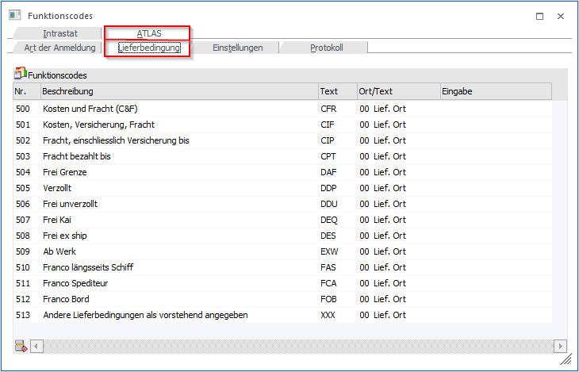

Beim ersten Öffnen des Menüpunkts werden die Lieferbedingungen lt. Codeliste A1840 des deutschen Zolls (Incoterms) gefüllt. Die Abkürzung "Incoterm" steht für die International Commercial Terms. Damit werden einheitliche Regelungen der Käufer- und Verkäuferpflichten im internationalen Handel bei Lieferverträgen geregelt.
Insbesondere werden die Aufteilung der Transportkosten zwischen Käufer und Verkäufer und wer im Falle eines Verlustes der Ware das finanzielle Risiko trägt. Zudem wird der Übergang des Transportrisikos vom Verkäufer auf den Käufer (Gefahrenübergang) geregelt. Die Incoterms geben jedoch keine Auskunft darüber, wann und wo das Eigentum an der Ware von dem Verkäufer auf den Käufer übergeht.
In der Spalte "Ort/Text" stehen folgende Optionen (Auswahl in der Combobox) zur Verfügung:
ü Lieferanschrift (= Ort der Lieferadresse)
ü Text 1-10 (= Textzeilen 1-10 aus dem Belegkopf)
ü Eingabe
Ist z. B. der Ort des Gefahrenübergangs die Lieferadresse, kann die Standard-Einstellung "00 = Lief.Ort " in der Spalte "Ort/Text" ausgewählt werden. Ansonsten kann diese Information in den Belegkopfnotizfeldern in der Belegerfassung (Register "Text") hinterlegt werden und die Zuordnung an dieser Stelle vorgenommen werden (Option "Text 1-10").
Eine Besonderheit stellt hier die Angabe des Incoterm-Codes "XXX" dar. Dieser wird verwendet, wenn eine andere Lieferbedingung gilt als die in der Bildschirmtabelle aufgelisteten. Wird dieser Code gewählt, dann ist die Übermittlung eines ergänzenden Textes in der XML-Datei erforderlich. Dieser wird in einem anderen XML-tag übermittelt als bei den anderen Incoterm-Codes ("lbText" statt "lbOrt").
Dafür steht die Option "Eingabe" in der Spalte "Ort/Text" zur Verfügung. Wird diese gewählt, kann anschließend in der nächsten Spalte der entsprechende Text hinterlegt werden.
Tabellenbuttons

Ø Zeile entfernen
Mit dem Button "Zeile entfernen" können Zeilen aus der Tabelle gelöscht werden.
Ø Ausgabe Excel
Durch Anwahl des Buttons "Ausgabe Excel" wird der Inhalt der Tabelle an Microsoft Excel übergeben.
Ø Tabelleneinstellungen speichern
Die Spalten einer Tabelle können grundsätzlich an beliebige Positionen verschoben, bzw. in der Breite entsprechend angepasst werden. Durch Anwahl des Buttons "Tabelleneinstellungen speichern" werden die Einstellungen benutzerspezifisch gespeichert und bei dem nächsten Aufruf des Programmpunktes wieder vorgeschlagen.
Ø Gesamteinstellungen speichern
Im Gegensatz zu "Tabelleneinstellungen speichern" können mit "Gesamteinstellungen speichern" mehrere Tabellenaufbauten gespeichert und nach Wunsch geladen werden. Zusätzlich werden Sonderfunktionen der Tabelle (z.B. "Spalte gruppieren") ebenfalls bei der Speicherung bedacht.
Einige Incoterm-Codes in der Übersicht
|
Code |
Bedeutung |
Anzugebender Ort |
|
EXW |
ab Werk (engl.: EX Works) |
Standort des Werks |
|
FCA |
frei Spediteur (engl.: Free Carrier) |
vereinbarter Ort |
|
FAS |
frei längsseits Schiff (engl.: Free Alongside Ship) |
vereinbarter Verladehafen |
|
FOB |
frei an Bord (engl.: Free On Board) |
vereinbarter Verladehafen |
|
CFR |
Kosten und Fracht (engl.: Cost And Freight) |
vereinbarter Bestimmungshafen |
|
CIF |
Kosten, Versicherung und Fracht bis zum Bestimmungshafen (engl.: Cost Insurance Freight) |
vereinbarter Bestimmungshafen |
|
CPT |
Fracht, Porto bezahlt bis (engl.: Carriage Paid To) |
vereinbarter Bestimmungsort |
|
CIP |
Fracht, Porto und Versicherung bezahlt bis (engl.: Carriage Insurance Paid) |
vereinbarter Bestimmungsort |
|
DAF |
frei Grenze (engl.: Delivered At Frontier) |
vereinbarter Lieferort an der Grenze |
|
DES |
frei ab Schiff (engl.: Delivered Ex Ship) |
vereinbarter Bestimmungshafen |
|
DEQ |
frei ab Kai (engl.: Delivered Ex Quay) |
vereinbarter Bestimmungshafen incl. Entladung |
|
DDU |
frei unverzollt (engl.: Delivery Duty Unpaid) |
vereinbarter Bestimmungsort im Einfuhrland |
|
DDP |
verzollt (engl.: Delivery Duty Paid) |
vereinbarter Lieferort im Einfuhrland |